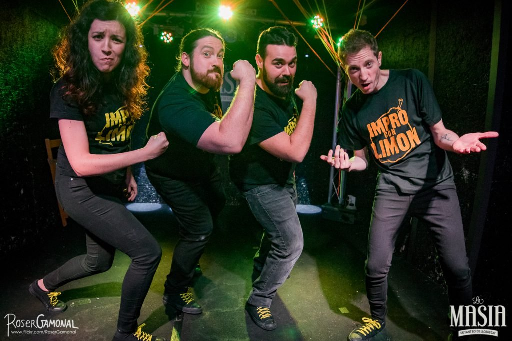

¡Todos los públicos!
Impro con limón
A partir de las aportaciones del público, los actores crean personajes e hilan tramas y desventuras en pequeñas escenas teatrales.
Antes de sentarse, cada espectador escribe una frase en un papel: serán los títulos (o el texto) de las improvisaciones. Durante el show el público propone estilos —western, ciencia ficción, musical…—, diálogos y lugares. ¿El resultado? Un espectáculo loco, divertido, fresco y con un toque ácido.
Descargar dossier →